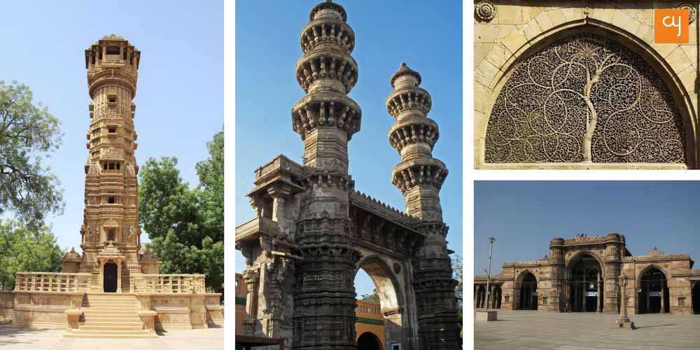
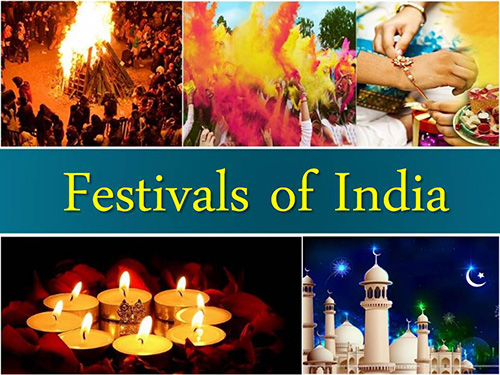
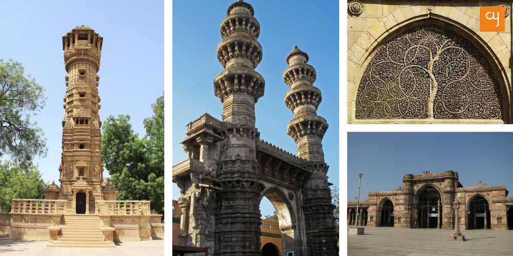
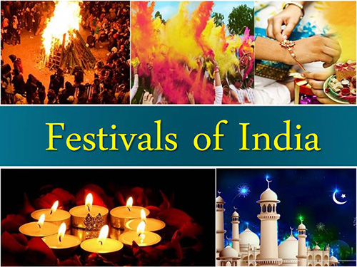
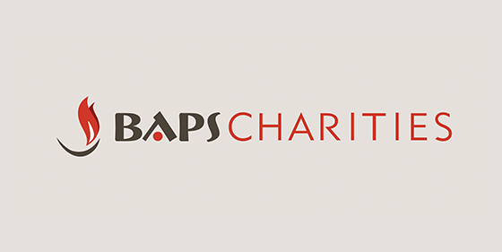
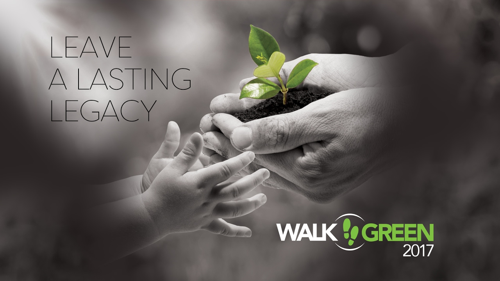

About me:-
Born 1995 in Ahmedabad,it is a one of the big city of India.This city declared as historical city by UNESCO and people of this city are foody and travel lover and this is the only thing which inculcated this interest in me. I belong to Indian culture.India culture is too different from any other cultures.In India anyone found different festivals,languages ,religious,delicacies and so on but it makes India unique in the whole world.I belong from that culture where the guests are treated next to god and guests are welcoming by saying "Namaste".In India there are many religious people live together and they always ready to help each other without expecting anything in return.
 



|
About my work with BAPS charity:-
|   |
Moreover,I have some qualities such as philanthropist,nature lover and so on as this all qualities make me different from other normal people. as I always like to involve myself in some extra activities no matter whether I am in India or Canada.Nowadays, I have joined BAPS charity which is working in all around the world.As part of this charity I am working as volunteer because I love to serve my voluntary to the world,I do not want to west my life behind the things which are not going to help me in my whole life.As I Strictly follow some rules and motto in my life.
My motto for life is:"Life is too short,Do not waste your time behind living someone else life"